Held-out observed pairs. Supportive/counterexamples are extremes in the frozen direction, one per distinct prompt; random audit uses a seeded hash ordering. Examples are illustrative, not typicality or causal evidence. The CSV is a blank human annotation template.
party-building (preferred direction frozen on discovery) supportive Boris Johnson and Eminen on a stage having an epic rap battle together
preferred: 0.3252 rejected: 0.2252 Preferred − rejected: +0.0999; event imagereward:test:007713-0046. Unverified.
supportive movie still of a man and a robot in a moment of horror, movie still, cinematic composition, cinematic light, by edgar wright and david lynch
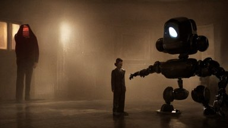
preferred: 0.3034 rejected: 0.2039 Preferred − rejected: +0.0995; event imagereward:test:007223-0095. Unverified.
counterexample psychedelic multicolor clouds, god rays, volumetric lighting, dynamic intricate ornate
preferred: 0.1944 rejected: 0.3444
Preferred − rejected: -0.1500; event imagereward:test:001286-0047. Unverified.
counterexample spanish mauricio colmenero
preferred: 0.1975 rejected: 0.3260 Preferred − rejected: -0.1284; event imagereward:test:008711-0012. Unverified.
random_audit if woody and buzz from toy story had a kid pixar animation hd
preferred: 0.3209 rejected: 0.2658 Preferred − rejected: +0.0551; event imagereward:test:001151-0006. Unverified.
random_audit futuristic hall, crisp, artstation, luxury, beautiful, dim painterly lighting volumetric aquatic, 3 d concept art
preferred: 0.2764 rejected: 0.2700
Preferred − rejected: +0.0064; event imagereward:test:001366-0019. Unverified.
building (preferred direction frozen on discovery) supportive if woody and buzz from toy story had a kid pixar animation hd
preferred: 0.3221 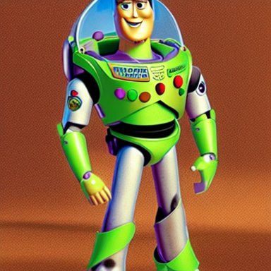
rejected: 0.1942 Preferred − rejected: +0.1279; event imagereward:test:001151-0006. Unverified.
supportive movie still of a man and a robot in a moment of horror, movie still, cinematic composition, cinematic light, by edgar wright and david lynch
preferred: 0.3063 rejected: 0.1857 Preferred − rejected: +0.1206; event imagereward:test:007223-0095. Unverified.
counterexample porsche 911 in back 2 the future. trail of fire on street. 88mph. lightning strike
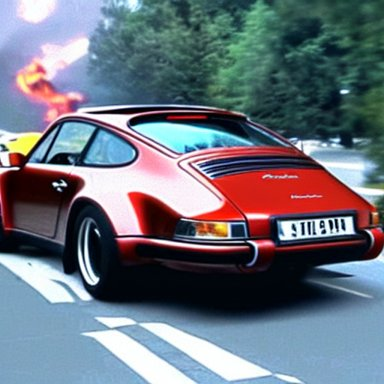
preferred: 0.2208 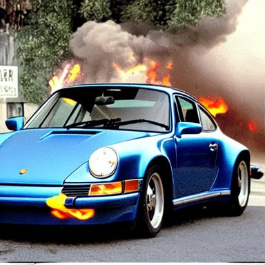
rejected: 0.3655 Preferred − rejected: -0.1447; event imagereward:test:007153-0089. Unverified.
counterexample spanish mauricio colmenero
preferred: 0.2095 rejected: 0.3533 Preferred − rejected: -0.1438; event imagereward:test:008711-0012. Unverified.
random_audit a portrait oil painting of a smart man in his mid - 4 0 s, brown hair, blue eyes, salt and pepper beard, full beard, red skin, big eye brows, highly detailed, artistic composition, sharp focus, intricate concept, subtle lighting
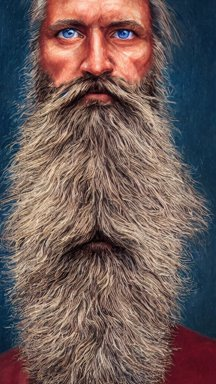
preferred: 0.2048 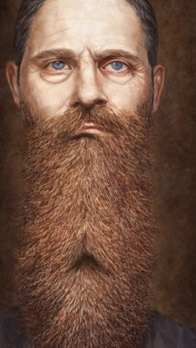
rejected: 0.1900 Preferred − rejected: +0.0148; event imagereward:test:010795-0050. Unverified.
random_audit Horrifying creature, haunted, horror
preferred: 0.2167 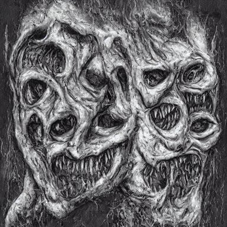
rejected: 0.2052 Preferred − rejected: +0.0115; event imagereward:test:009006-0102. Unverified.
portico (preferred direction frozen on discovery) supportive attractive bradley james as king arthur pendragon, sat in his throne, big arches in the back, very detailed face, by gaston bussiere, j. c. leyendecker
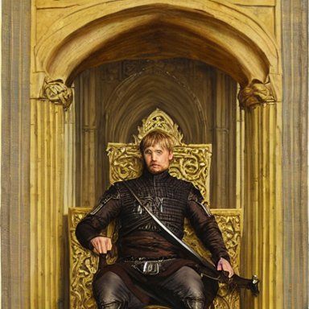
preferred: 0.3676 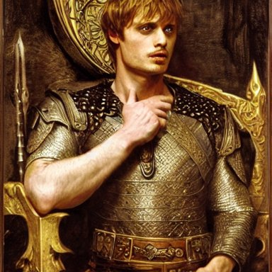
rejected: 0.2403 Preferred − rejected: +0.1273; event imagereward:test:001333-0052. Unverified.
supportive a bright fantasy city built between cliffs, sleek glass buildings, elegant bridges between stalactites, illustration, raining, dark and moody lighting, at night, digital art, oil painting, cold blue tones, fantasy, 8 k, trending on artstation, detailed
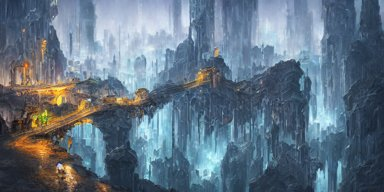
preferred: 0.3289 rejected: 0.2050 Preferred − rejected: +0.1239; event imagereward:test:010921-0064. Unverified.
counterexample porsche 911 in back 2 the future. trail of fire on street. 88mph. lightning strike
preferred: 0.2011 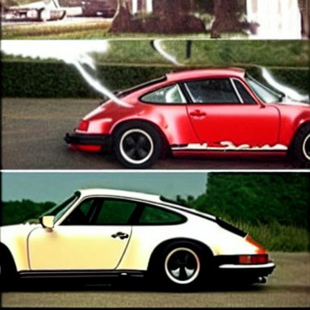
rejected: 0.3192 Preferred − rejected: -0.1181; event imagereward:test:007153-0089. Unverified.
counterexample psychedelic multicolor clouds, god rays, volumetric lighting, dynamic intricate ornate
preferred: 0.1950 rejected: 0.3080
Preferred − rejected: -0.1129; event imagereward:test:001286-0047. Unverified.
random_audit Horrifying creature, haunted, horror
preferred: 0.2123 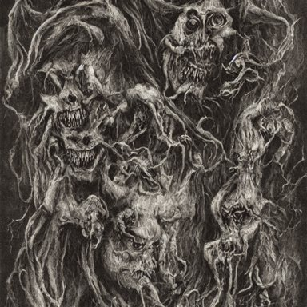
rejected: 0.2006 Preferred − rejected: +0.0117; event imagereward:test:009006-0102. Unverified.
random_audit a portrait of a red - skinned dragonborn monk in a plain white cloak white cloak, holding a spear with a black tip, fantasy art by greg rutkowski
preferred: 0.3021 rejected: 0.2230 Preferred − rejected: +0.0791; event imagereward:test:008328-0024. Unverified.
cabin (preferred direction frozen on discovery) supportive a cat combined with a chinchilla
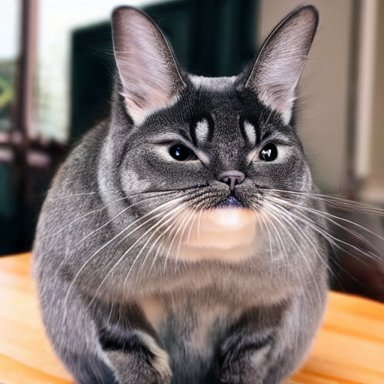
preferred: 0.2794 rejected: 0.1983 Preferred − rejected: +0.0811; event imagereward:test:001192-0041. Unverified.
supportive astronaut drifting afloat in space, in the darkness away from anyone else, alone, digital render, detailed illustration, black background dotted with stars, concept art, realistic, 8 k
preferred: 0.2556 rejected: 0.1854 Preferred − rejected: +0.0702; event imagereward:test:007019-0095. Unverified.
counterexample handsome gaunt man with receding hair, in a smoking jacket, holding a pipe, warm colors, hard angles, painting by gaston bussiere, craig mullins, j. c. leyendecker
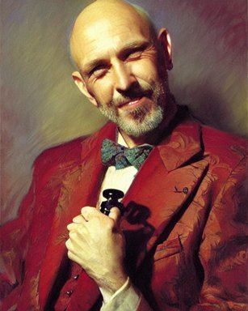
preferred: 0.1872 rejected: 0.3001 Preferred − rejected: -0.1129; event imagereward:test:001376-0050. Unverified.
counterexample film still from frightening horror movie. cinematic. 8 k.
preferred: 0.2036 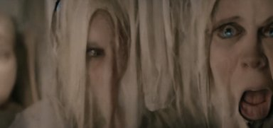
rejected: 0.3032 Preferred − rejected: -0.0996; event imagereward:test:009475-0037. Unverified.
random_audit attractive bradley james as king arthur pendragon, sat in his throne, big arches in the back, very detailed face, by gaston bussiere, j. c. leyendecker
preferred: 0.2505 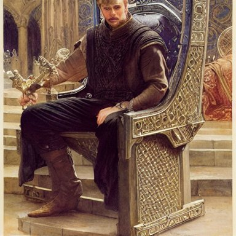
rejected: 0.2435 Preferred − rejected: +0.0070; event imagereward:test:001333-0052. Unverified.
random_audit scene from a 2 0 1 0 film by artemisia gentileschi showing a woman
preferred: 0.2447 rejected: 0.2489 Preferred − rejected: -0.0042; event imagereward:test:007592-0020. Unverified.
guesthouse (preferred direction frozen on discovery) supportive movie still of a man and a robot in a moment of horror, movie still, cinematic composition, cinematic light, by edgar wright and david lynch
preferred: 0.3013 rejected: 0.1892 Preferred − rejected: +0.1122; event imagereward:test:007223-0095. Unverified.
supportive seascape with big waves and sunset painted with oil paints in Kuindzhi style
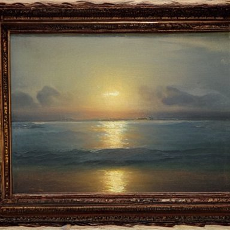
preferred: 0.2823 rejected: 0.1991 Preferred − rejected: +0.0831; event imagereward:test:008252-0002. Unverified.
counterexample film still from frightening horror movie. cinematic. 8 k.
preferred: 0.1994 rejected: 0.3020
Preferred − rejected: -0.1026; event imagereward:test:009475-0037. Unverified.
counterexample porsche 911 in back 2 the future. trail of fire on street. 88mph. lightning strike
preferred: 0.2188 rejected: 0.3138
Preferred − rejected: -0.0950; event imagereward:test:007153-0089. Unverified.
random_audit a half - masked rugged laboratory engineer man with cybernetic enhancements as seen from a distance, scifi character portrait by greg rutkowski, esuthio, craig mullins, 1 / 4 headshot, cinematic lighting, dystopian scifi gear, gloomy, profile picture, mechanical, half robot, implants, dieselpunk
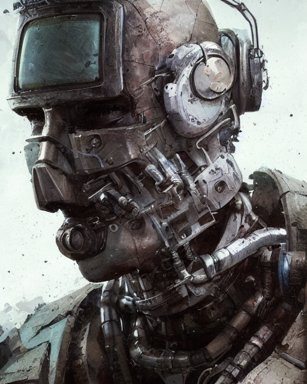
preferred: 0.1911 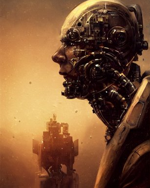
rejected: 0.2162 Preferred − rejected: -0.0251; event imagereward:test:001383-0079. Unverified.
random_audit artgerm, psychedelic ben kweller, rocking out, headphones dj rave, digital artwork, r. crumb, svg vector
preferred: 0.1974 rejected: 0.2043 Preferred − rejected: -0.0069; event imagereward:test:010862-0025. Unverified.
outbuilding (preferred direction frozen on discovery) supportive movie still of a man and a robot in a moment of horror, movie still, cinematic composition, cinematic light, by edgar wright and david lynch
preferred: 0.2826 rejected: 0.1859 Preferred − rejected: +0.0967; event imagereward:test:007223-0095. Unverified.
supportive if woody and buzz from toy story had a kid pixar animation hd
preferred: 0.2729 rejected: 0.1936 Preferred − rejected: +0.0793; event imagereward:test:001151-0006. Unverified.
counterexample porsche 911 in back 2 the future. trail of fire on street. 88mph. lightning strike
preferred: 0.2123 rejected: 0.3309
Preferred − rejected: -0.1186; event imagereward:test:007153-0089. Unverified.
counterexample if woody and buzz from toy story had a kid pixar animation hd
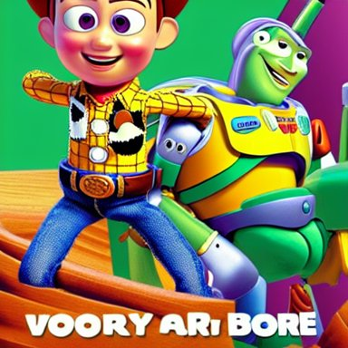
preferred: 0.2300 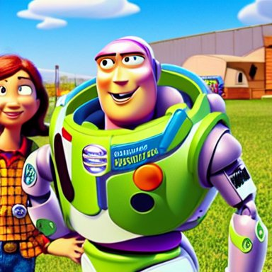
rejected: 0.3436 Preferred − rejected: -0.1136; event imagereward:test:001151-0006. Unverified.
random_audit scene from a 2 0 1 0 film by artemisia gentileschi showing a woman
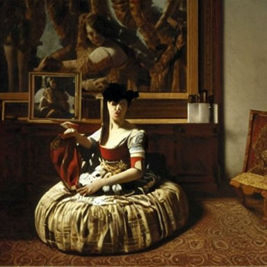
preferred: 0.2396 rejected: 0.2438 Preferred − rejected: -0.0042; event imagereward:test:007592-0020. Unverified.
random_audit portrait of a red color wolf with yellow horns in a suit, D&D, fantasy, elegant, badass, highly detailed, slim, digital painting, artstation, concept art, sharp focus, illustration
preferred: 0.2145 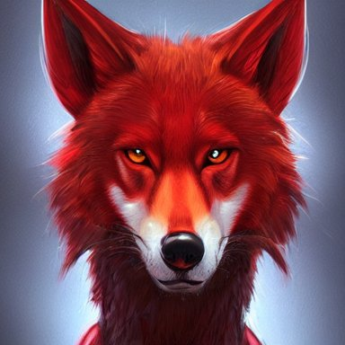
rejected: 0.1985 Preferred − rejected: +0.0160; event imagereward:test:009582-0143. Unverified.
log-cabin (preferred direction frozen on discovery) supportive a photo of a very fat green parrot.
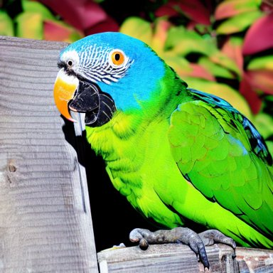
preferred: 0.2583 rejected: 0.1827 Preferred − rejected: +0.0756; event imagereward:test:010366-0012. Unverified.
supportive if woody and buzz from toy story had a kid pixar animation hd
preferred: 0.2602 rejected: 0.1884
Preferred − rejected: +0.0718; event imagereward:test:001151-0006. Unverified.
counterexample handsome gaunt man with receding hair, in a smoking jacket, holding a pipe, warm colors, hard angles, painting by gaston bussiere, craig mullins, j. c. leyendecker
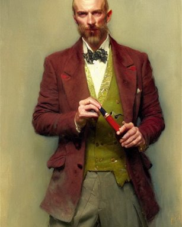
preferred: 0.1714 rejected: 0.3097 Preferred − rejected: -0.1383; event imagereward:test:001376-0050. Unverified.
counterexample spanish mauricio colmenero
preferred: 0.1552 rejected: 0.2447 Preferred − rejected: -0.0895; event imagereward:test:008711-0012. Unverified.
random_audit handsome gaunt man with receding hair, in a smoking jacket, holding a pipe, warm colors, hard angles, painting by gaston bussiere, craig mullins, j. c. leyendecker
preferred: 0.1766 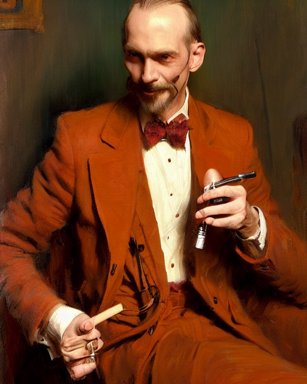
rejected: 0.2393 Preferred − rejected: -0.0627; event imagereward:test:001376-0050. Unverified.
random_audit porsche 911 in back 2 the future. trail of fire on street. 88mph. lightning strike
preferred: 0.1835 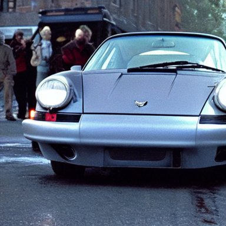
rejected: 0.2366 Preferred − rejected: -0.0531; event imagereward:test:007153-0089. Unverified.
city-dwelling (preferred direction frozen on discovery) supportive movie still of a man and a robot in a moment of horror, movie still, cinematic composition, cinematic light, by edgar wright and david lynch
preferred: 0.2801 rejected: 0.1703 Preferred − rejected: +0.1098; event imagereward:test:007223-0095. Unverified.
supportive a realistic detailed cinematic painting of a beautiful clear glass vibrant consciousness of human evolution, strange miraculous entity reflecting light prism, spiritual enlightenment, manifestation, peace, reincarnation, memories of past lives, triumph, beauty, perfection, opal statues adorned in jewels, by david a. hardy, kinkade, lisa frank, wpa, public works mural, socialist
preferred: 0.2570 rejected: 0.1718 Preferred − rejected: +0.0853; event imagereward:test:010264-0028. Unverified.
counterexample porsche 911 in back 2 the future. trail of fire on street. 88mph. lightning strike
preferred: 0.2322 rejected: 0.3566
Preferred − rejected: -0.1244; event imagereward:test:007153-0089. Unverified.
counterexample a half - masked rugged laboratory engineer man with cybernetic enhancements as seen from a distance, scifi character portrait by greg rutkowski, esuthio, craig mullins, 1 / 4 headshot, cinematic lighting, dystopian scifi gear, gloomy, profile picture, mechanical, half robot, implants, dieselpunk
preferred: 0.2087 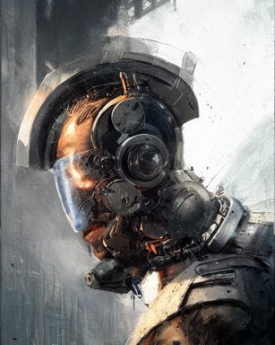
rejected: 0.3267 Preferred − rejected: -0.1180; event imagereward:test:001383-0079. Unverified.
random_audit Boris Johnson and Eminen on a stage having an epic rap battle together
preferred: 0.1728 rejected: 0.1690 Preferred − rejected: +0.0037; event imagereward:test:007713-0046. Unverified.
random_audit a group of artists creating a masterpiece, glorious, in the style of artgerm and charlie bowater and atey ghailan and mike mignola, epic lighting, vibrant colors and hard shadows and strong rim light, very coherent, comic cover art, plain background, trending on artstation
preferred: 0.2093 rejected: 0.1993 Preferred − rejected: +0.0100; event imagereward:test:008615-0007. Unverified.
community-building (preferred direction frozen on discovery) supportive movie still of a man and a robot in a moment of horror, movie still, cinematic composition, cinematic light, by edgar wright and david lynch
preferred: 0.2949 rejected: 0.1880 Preferred − rejected: +0.1069; event imagereward:test:007223-0095. Unverified.
supportive porsche 911 in back 2 the future. trail of fire on street. 88mph. lightning strike
preferred: 0.3560 rejected: 0.2638
Preferred − rejected: +0.0922; event imagereward:test:007153-0089. Unverified.
counterexample porsche 911 in back 2 the future. trail of fire on street. 88mph. lightning strike
preferred: 0.2386 rejected: 0.3580
Preferred − rejected: -0.1194; event imagereward:test:007153-0089. Unverified.
counterexample film still from frightening horror movie. cinematic. 8 k.
preferred: 0.1939 rejected: 0.3131
Preferred − rejected: -0.1192; event imagereward:test:009475-0037. Unverified.
random_audit a half - masked rugged laboratory engineer man with cybernetic enhancements as seen from a distance, scifi character portrait by greg rutkowski, esuthio, craig mullins, 1 / 4 headshot, cinematic lighting, dystopian scifi gear, gloomy, profile picture, mechanical, half robot, implants, dieselpunk
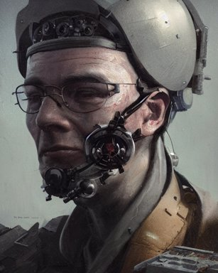
preferred: 0.2649 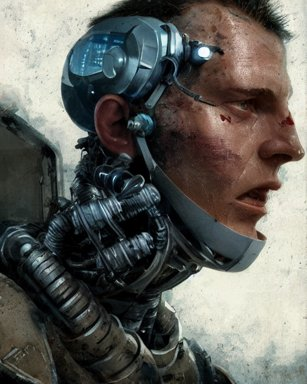
rejected: 0.2695 Preferred − rejected: -0.0046; event imagereward:test:001383-0079. Unverified.
random_audit promotional vogue studio portrait photo of Alanis Morissette
preferred: 0.2172 rejected: 0.2245
Preferred − rejected: -0.0073; event imagereward:test:008772-0049. Unverified.
house (preferred direction frozen on discovery) supportive movie still of a man and a robot in a moment of horror, movie still, cinematic composition, cinematic light, by edgar wright and david lynch
preferred: 0.2887 rejected: 0.1985 Preferred − rejected: +0.0901; event imagereward:test:007223-0095. Unverified.
supportive porsche 911 in back 2 the future. trail of fire on street. 88mph. lightning strike
preferred: 0.3406 rejected: 0.2540
Preferred − rejected: +0.0865; event imagereward:test:007153-0089. Unverified.
counterexample porsche 911 in back 2 the future. trail of fire on street. 88mph. lightning strike
preferred: 0.2088 rejected: 0.3616
Preferred − rejected: -0.1529; event imagereward:test:007153-0089. Unverified.
counterexample if woody and buzz from toy story had a kid pixar animation hd
preferred: 0.2275 rejected: 0.3392 Preferred − rejected: -0.1116; event imagereward:test:001151-0006. Unverified.
random_audit beautiful human witch with blonde short curtly hair in intricate ornate witch robe, haughty evil look, witch hat. in style of yoji shinkawa and hyung - tae kim, trending on artstation, dark fantasy, great composition, concept art, highly detailed, dynamic pose.
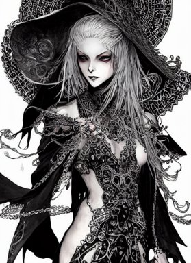
preferred: 0.2056 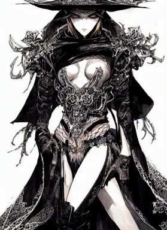
rejected: 0.2091 Preferred − rejected: -0.0035; event imagereward:test:009500-0056. Unverified.
random_audit 3D render of a cute tribal anime boy in a loincloth, fantasy artwork, fluffy hair, mid-shot, award winning, ray tracing, hyper detailed, very very very beautiful, studio lighting, artstation, unreal engine, unreal 5, 4k, octane renderer
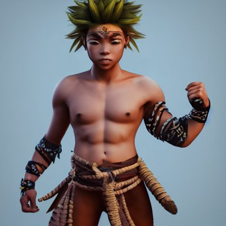
preferred: 0.1785 rejected: 0.1899 Preferred − rejected: -0.0114; event imagereward:test:007133-0110. Unverified.
hand-shaped (rejected direction frozen on discovery) supportive retro scifi spaceport with a spaceship about to take off, concept art, hyper detailed, ultra realistic, octane, artstation trending, unreal engine, dramatic lighting, reflections
preferred: 0.2018 rejected: 0.3211 Preferred − rejected: -0.1193; event imagereward:test:007367-0101. Unverified.
supportive the pope in saving private james ryan
preferred: 0.2038 rejected: 0.3009 Preferred − rejected: -0.0972; event imagereward:test:010918-0030. Unverified.
counterexample promotional vogue studio portrait photo of Alanis Morissette
preferred: 0.2871 rejected: 0.1944 Preferred − rejected: +0.0927; event imagereward:test:008772-0049. Unverified.
counterexample a realistic detailed cinematic painting of a beautiful clear glass vibrant consciousness of human evolution, strange miraculous entity reflecting light prism, spiritual enlightenment, manifestation, peace, reincarnation, memories of past lives, triumph, beauty, perfection, opal statues adorned in jewels, by david a. hardy, kinkade, lisa frank, wpa, public works mural, socialist
preferred: 0.3158 rejected: 0.2352 Preferred − rejected: +0.0806; event imagereward:test:010264-0028. Unverified.
random_audit photoreal portrait very intricate! synthwave dj wearing a black hoody, white glossy class - a surfaces, glittering light leaks, electromagnetic waves, blue glowing aggressive led eyes, zbrush, greeble skin, octane render, colani design, cyberpunk, dystopia tokyo
preferred: 0.2177 rejected: 0.2078 Preferred − rejected: +0.0099; event imagereward:test:007759-0110. Unverified.
random_audit attractive bradley james as king arthur pendragon, sat in his throne, big arches in the back, very detailed face, by gaston bussiere, j. c. leyendecker
preferred: 0.2724 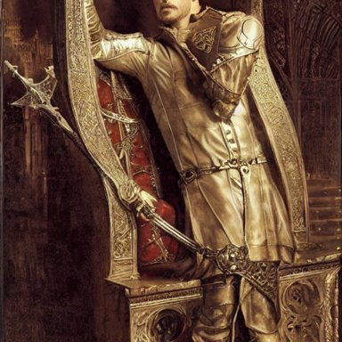
rejected: 0.2720 Preferred − rejected: +0.0003; event imagereward:test:001333-0052. Unverified.
backsaw (rejected direction frozen on discovery) supportive film still of the geisha robot from ghost in the shell, cinematic lighting, 3 5 mm, high resolution
preferred: 0.2048 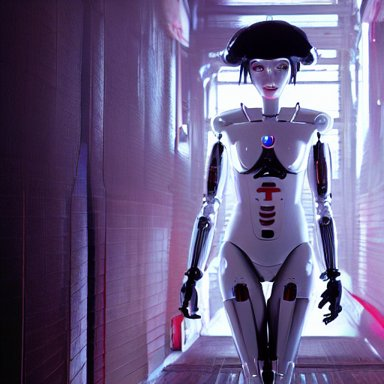
rejected: 0.3064 Preferred − rejected: -0.1017; event imagereward:test:008289-0059. Unverified.
supportive spanish mauricio colmenero
preferred: 0.2208 rejected: 0.3128 Preferred − rejected: -0.0920; event imagereward:test:008711-0012. Unverified.
counterexample a photo of a very fat green parrot.
preferred: 0.2867 rejected: 0.2026
Preferred − rejected: +0.0840; event imagereward:test:010366-0012. Unverified.
counterexample if woody and buzz from toy story had a kid pixar animation hd
preferred: 0.2805 rejected: 0.2058
Preferred − rejected: +0.0748; event imagereward:test:001151-0006. Unverified.
random_audit a photo of a very fat green parrot.
preferred: 0.2867 rejected: 0.2097
Preferred − rejected: +0.0770; event imagereward:test:010366-0012. Unverified.
random_audit if woody and buzz from toy story had a kid pixar animation hd
preferred: 0.2805 rejected: 0.2245 Preferred − rejected: +0.0561; event imagereward:test:001151-0006. Unverified.
handgrip (rejected direction frozen on discovery) supportive photo by josh pierce and prateek vatash and roman bratschi, a giant huge beautiful mid - century modern revival mansion palace with green plants and giant reflective windows on a huge scenic cliff overlooking the ocean, 4 d, 4 k, ray tracing reflections, volumetric lighting and shadows, haze, light beams
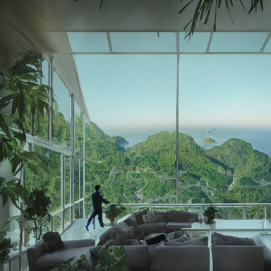
preferred: 0.1939 rejected: 0.2987 Preferred − rejected: -0.1048; event imagereward:test:007209-0011. Unverified.
supportive the pope in saving private james ryan
preferred: 0.2148 rejected: 0.3058 Preferred − rejected: -0.0910; event imagereward:test:010918-0030. Unverified.
counterexample close - up view of silhouettes watching a giant dark sci - fi alien sea creature with big glowing eyes in a giant futuristic fish tank, deep blue colors, highly detailed science fiction painting by syd mead, roger dean, and moebius. rich colors, high contrast, black background. unreal engine, artstation.
preferred: 0.3031 rejected: 0.1905 Preferred − rejected: +0.1125; event imagereward:test:002127-0162. Unverified.
counterexample film still from frightening horror movie. cinematic. 8 k.
preferred: 0.3002 rejected: 0.2138
Preferred − rejected: +0.0864; event imagereward:test:009475-0037. Unverified.
random_audit the great grandchildren of superheroes
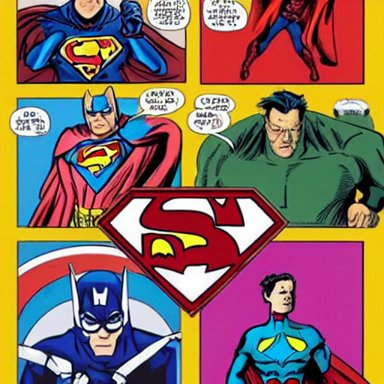
preferred: 0.2620 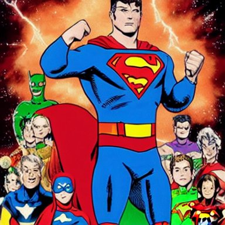
rejected: 0.2503 Preferred − rejected: +0.0117; event imagereward:test:010953-0086. Unverified.
random_audit Boris Johnson and Eminen on a stage having an epic rap battle together
preferred: 0.2227 rejected: 0.2607 Preferred − rejected: -0.0380; event imagereward:test:007713-0046. Unverified.
tarmac (rejected direction frozen on discovery) supportive if woody and buzz from toy story had a kid pixar animation hd
preferred: 0.2431 rejected: 0.3454 Preferred − rejected: -0.1023; event imagereward:test:001151-0006. Unverified.
supportive bioluminescent crystal ball abstract sculpture, neon, fluorescent, magenta hyper detailed, red & purple beauteous biomechanical organic lightpainting, 8 k scenery, perfect lighting balance,
preferred: 0.2167 rejected: 0.3176 Preferred − rejected: -0.1010; event imagereward:test:008275-0162. Unverified.
counterexample if woody and buzz from toy story had a kid pixar animation hd
preferred: 0.3446 rejected: 0.2257 Preferred − rejected: +0.1189; event imagereward:test:001151-0006. Unverified.
counterexample funny peanut butter
preferred: 0.2924 rejected: 0.2114 Preferred − rejected: +0.0810; event imagereward:test:010856-0009. Unverified.
random_audit huge hulking creature, muscular and terrifying, unsettling, creepy, epic hairy monster terrifying covered in dark fur and matted mud with glowing green eyes, concept art, digital character art, artstation, cgsociety
preferred: 0.2856 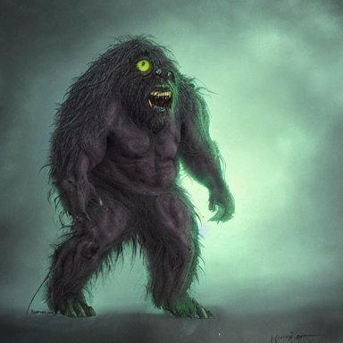
rejected: 0.3046 Preferred − rejected: -0.0190; event imagereward:test:007170-0061. Unverified.
random_audit 3D render of a cute tribal anime boy in a loincloth, fantasy artwork, fluffy hair, mid-shot, award winning, ray tracing, hyper detailed, very very very beautiful, studio lighting, artstation, unreal engine, unreal 5, 4k, octane renderer
preferred: 0.2311 rejected: 0.2085 Preferred − rejected: +0.0226; event imagereward:test:007133-0110. Unverified.
machete (rejected direction frozen on discovery) supportive beautiful human witch with blonde short curtly hair in intricate ornate witch robe, haughty evil look, witch hat. in style of yoji shinkawa and hyung - tae kim, trending on artstation, dark fantasy, great composition, concept art, highly detailed, dynamic pose.
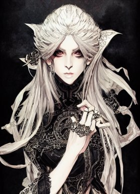
preferred: 0.2138 rejected: 0.3476 Preferred − rejected: -0.1338; event imagereward:test:009500-0056. Unverified.
supportive photo by josh pierce and prateek vatash and roman bratschi, a giant huge beautiful mid - century modern revival mansion palace with green plants and giant reflective windows on a huge scenic cliff overlooking the ocean, 4 d, 4 k, ray tracing reflections, volumetric lighting and shadows, haze, light beams
preferred: 0.2079 rejected: 0.2988
Preferred − rejected: -0.0908; event imagereward:test:007209-0011. Unverified.
counterexample a portrait of a red - skinned dragonborn monk in a plain white cloak white cloak, holding a spear with a black tip, fantasy art by greg rutkowski
preferred: 0.3972 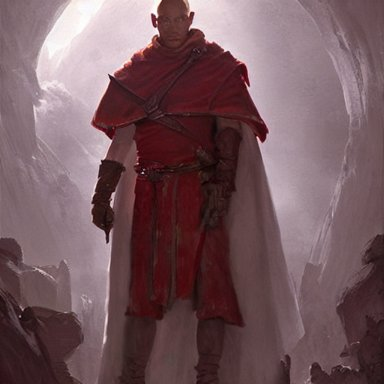
rejected: 0.2577 Preferred − rejected: +0.1395; event imagereward:test:008328-0024. Unverified.
counterexample attractive bradley james as king arthur pendragon, sat in his throne, big arches in the back, very detailed face, by gaston bussiere, j. c. leyendecker
preferred: 0.3432 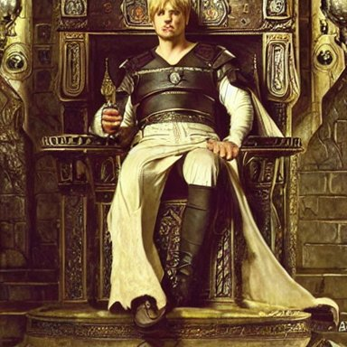
rejected: 0.2275 Preferred − rejected: +0.1157; event imagereward:test:001333-0052. Unverified.
random_audit spanish mauricio colmenero
preferred: 0.1961 rejected: 0.2317 Preferred − rejected: -0.0356; event imagereward:test:008711-0012. Unverified.
random_audit retro sci fi art of an astronaut next to jupiter in a car,
preferred: 0.2252 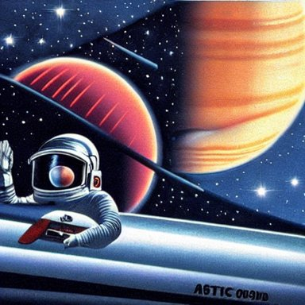
rejected: 0.2900 Preferred − rejected: -0.0648; event imagereward:test:010361-0095. Unverified.
watchband (rejected direction frozen on discovery) supportive !13 hungry cannibals making a rich salad around a marble table, !positioned as last supper cinematic lighting, dramatic framing, highly detalied, 4k, artstation, by Rene Lalique and Wayne Barlowe
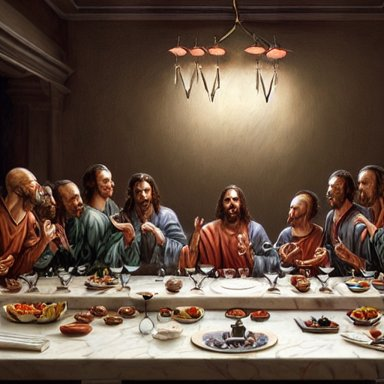
preferred: 0.1991 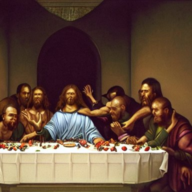
rejected: 0.2951 Preferred − rejected: -0.0959; event imagereward:test:007135-0060. Unverified.
supportive handsome gaunt man with receding hair, in a smoking jacket, holding a pipe, warm colors, hard angles, painting by gaston bussiere, craig mullins, j. c. leyendecker
preferred: 0.2382 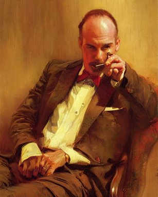
rejected: 0.3216 Preferred − rejected: -0.0834; event imagereward:test:001376-0050. Unverified.
counterexample two beautiful identical female fighters facing each other, jean shorts, white top, dim lighting, gorgeous features, high resolution, detailed digital anime art
preferred: 0.3230 rejected: 0.2242
Preferred − rejected: +0.0987; event imagereward:test:011032-0049. Unverified.
counterexample photograph of a ten year old girl by annie leibovitz, red hair, freckles, toothless
preferred: 0.2423 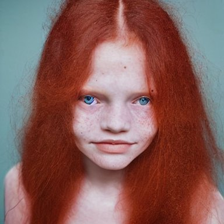
rejected: 0.1600 Preferred − rejected: +0.0823; event imagereward:test:007066-0058. Unverified.
random_audit spanish mauricio colmenero
preferred: 0.2757 rejected: 0.2620 Preferred − rejected: +0.0137; event imagereward:test:008711-0012. Unverified.
random_audit photo of a guy playing a gameboy under the blanket in his bed at night
preferred: 0.2184 rejected: 0.2751 Preferred − rejected: -0.0568; event imagereward:test:001242-0093. Unverified.
handsaw (rejected direction frozen on discovery) supportive film still of the geisha robot from ghost in the shell, cinematic lighting, 3 5 mm, high resolution
preferred: 0.1910 rejected: 0.2940 Preferred − rejected: -0.1029; event imagereward:test:008289-0059. Unverified.
supportive spanish mauricio colmenero
preferred: 0.1955 rejected: 0.2897 Preferred − rejected: -0.0943; event imagereward:test:008711-0012. Unverified.
counterexample if woody and buzz from toy story had a kid pixar animation hd
preferred: 0.2955 rejected: 0.2189
Preferred − rejected: +0.0766; event imagereward:test:001151-0006. Unverified.
counterexample a portrait of a red - skinned dragonborn monk in a plain white cloak white cloak, holding a spear with a black tip, fantasy art by greg rutkowski
preferred: 0.2900 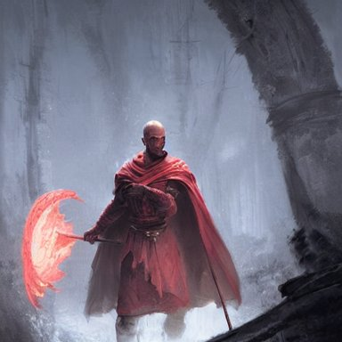
rejected: 0.2193 Preferred − rejected: +0.0706; event imagereward:test:008328-0024. Unverified.
random_audit a half - masked rugged laboratory engineer man with cybernetic enhancements as seen from a distance, scifi character portrait by greg rutkowski, esuthio, craig mullins, 1 / 4 headshot, cinematic lighting, dystopian scifi gear, gloomy, profile picture, mechanical, half robot, implants, dieselpunk
preferred: 0.2332 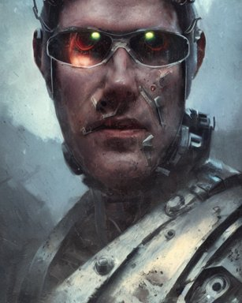
rejected: 0.2332 Preferred − rejected: +0.0000; event imagereward:test:001383-0079. Unverified.
random_audit A majestic landscape featuring a river, mountains and a forest. A small group of birds is flying in the sky. Harsh winter. very windy. There is a man walking in a deep snow. Cinematic, very beautiful, painting in the style of Lord of the rings
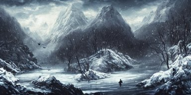
preferred: 0.2054 rejected: 0.1885 Preferred − rejected: +0.0169; event imagereward:test:007135-0056. Unverified.
clasp (rejected direction frozen on discovery) supportive a shot from inside someones mouth eating ice cream
preferred: 0.2394 rejected: 0.3239
Preferred − rejected: -0.0845; event imagereward:test:010419-0003. Unverified.
supportive portrait of a red color wolf with yellow horns in a suit, D&D, fantasy, elegant, badass, highly detailed, slim, digital painting, artstation, concept art, sharp focus, illustration
preferred: 0.2363 rejected: 0.3157 Preferred − rejected: -0.0793; event imagereward:test:009582-0143. Unverified.
counterexample spanish mauricio colmenero
preferred: 0.3366 rejected: 0.2294 Preferred − rejected: +0.1072; event imagereward:test:008711-0012. Unverified.
counterexample film still from frightening horror movie. cinematic. 8 k.
preferred: 0.2803 rejected: 0.1980 Preferred − rejected: +0.0823; event imagereward:test:009475-0037. Unverified.
random_audit bioluminescent crystal ball abstract sculpture, neon, fluorescent, magenta hyper detailed, red & purple beauteous biomechanical organic lightpainting, 8 k scenery, perfect lighting balance,
preferred: 0.2551 rejected: 0.2751 Preferred − rejected: -0.0199; event imagereward:test:008275-0162. Unverified.
random_audit raytraced render and digital painting of the inconceivable and spectacular a scene of complete madness, by greg rutkowski and michelangelo buonarroti and kinkade, cosmic entities, celestial, cosmic, luxury, elegant, ornate, vibrant and vivid, smooth, soft billowing smoke, darkness, bright, heavenly, elegant, swirls, cosmic flower, nebula vines, nebula tree, twirling, billowing, cinematic, unrealistic, high contrast, hdr, 4 k, artstation, cgsociety, unreal engine, symobolism, magical, mystical, mystifying, obscure, perplexing, zbrush, octane, hyperrealistic, bokeh, dof
preferred: 0.2202 rejected: 0.2190 Preferred − rejected: +0.0013; event imagereward:test:008151-0078. Unverified.
pocketknife (rejected direction frozen on discovery) supportive porsche 911 in back 2 the future. trail of fire on street. 88mph. lightning strike
preferred: 0.1976 rejected: 0.2825
Preferred − rejected: -0.0849; event imagereward:test:007153-0089. Unverified.
supportive the pope in saving private james ryan
preferred: 0.2265 rejected: 0.3061 Preferred − rejected: -0.0797; event imagereward:test:010918-0030. Unverified.
counterexample film still from frightening horror movie. cinematic. 8 k.
preferred: 0.2995 rejected: 0.2283 Preferred − rejected: +0.0712; event imagereward:test:009475-0037. Unverified.
counterexample a portrait of a red - skinned dragonborn monk in a plain white cloak white cloak, holding a spear with a black tip, fantasy art by greg rutkowski
preferred: 0.2951 rejected: 0.2246 Preferred − rejected: +0.0705; event imagereward:test:008328-0024. Unverified.
random_audit hyperrealism stock photo of highly detailed stylish humanoid robot in sci - fi cyberpunk style by gragory crewdson and vincent di fate that working in the highly detailed data center by mike winkelmann and laurie greasley rendered in blender and octane render
preferred: 0.2145 rejected: 0.2325 Preferred − rejected: -0.0180; event imagereward:test:010946-0081. Unverified.
random_audit attractive bradley james as king arthur pendragon, sat in his throne, big arches in the back, very detailed face, by gaston bussiere, j. c. leyendecker
preferred: 0.2814 rejected: 0.2781
Preferred − rejected: +0.0033; event imagereward:test:001333-0052. Unverified.
grenade (rejected direction frozen on discovery) supportive the pope in saving private james ryan
preferred: 0.2043 rejected: 0.3016 Preferred − rejected: -0.0973; event imagereward:test:010918-0030. Unverified.
supportive film still of the geisha robot from ghost in the shell, cinematic lighting, 3 5 mm, high resolution
preferred: 0.2213 rejected: 0.3013 Preferred − rejected: -0.0800; event imagereward:test:008289-0059. Unverified.
counterexample A majestic landscape featuring a river, mountains and a forest. A small group of birds is flying in the sky. Harsh winter. very windy. There is a man walking in a deep snow. Cinematic, very beautiful, painting in the style of Lord of the rings
preferred: 0.2870 rejected: 0.1895 Preferred − rejected: +0.0976; event imagereward:test:007135-0056. Unverified.
counterexample film still from frightening horror movie. cinematic. 8 k.
preferred: 0.3002 rejected: 0.2077
Preferred − rejected: +0.0925; event imagereward:test:009475-0037. Unverified.
random_audit a half - masked rugged laboratory engineer man with cybernetic enhancements as seen from a distance, scifi character portrait by greg rutkowski, esuthio, craig mullins, 1 / 4 headshot, cinematic lighting, dystopian scifi gear, gloomy, profile picture, mechanical, half robot, implants, dieselpunk
preferred: 0.3030 rejected: 0.2660
Preferred − rejected: +0.0370; event imagereward:test:001383-0079. Unverified.
random_audit a portrait of woman with long dark curly red hair under the water, stoic, windy, pale skin with dark scales, mermaid, alone, underwater, fish, white eyes, dramatic, epic painting, painting by wlop and nixeu, semirealism, artstation, octane render, sharpness, 8 k, golden ratio
preferred: 0.2081 rejected: 0.2477
Preferred − rejected: -0.0396; event imagereward:test:001293-0017. Unverified.